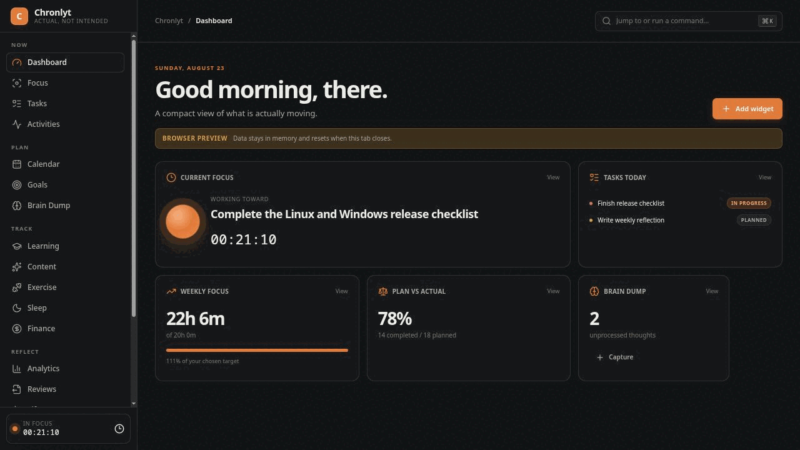

Plans meet reality
Tasks, Activities, Brain Dump, Goals and life categories in one local timeline.
Connect plans, focused work, activity and outcomes. Reflect on reality without giving up ownership of your data.
Windows 10/11 · Fedora · Debian/Ubuntu · AppImage · x86_64
Tasks, Activities, Brain Dump, Goals and life categories in one local timeline.
Timestamp-backed Focus Sessions with pause recovery and honest completion notes.
Plan vs Actual, analytics and Weekly Reviews make patterns visible.
Use evidence without turning subjective scores into false precision.
Local SQLite. No account, developer telemetry, analytics SDK or automatic upload.
AI optional. Choose provider, period and categories; preview the exact payload before sending.
Export anywhere. Markdown and versioned JSON are created offline, independently from AI.
Choose the clearly named asset in the latest GitHub Release.
The repository is currently private, so Releases require authorized GitHub access. Windows packages are not yet Authenticode-signed.